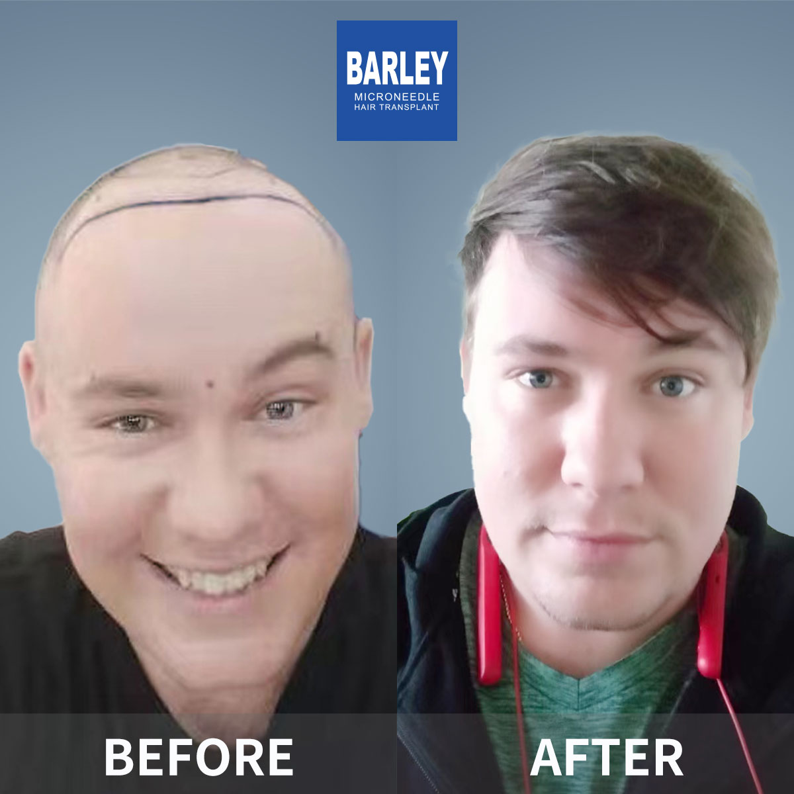

Comprehensive hair restoration solutions tailored to your needs

Personalized hairline design and transplantation for natural-looking results. Our expert surgeons use advanced microneedle technology to create a customized hairline that complements your facial features and restores a youthful appearance.

Add density to thinning areas with precision microneedle implantation. Our advanced technique allows for higher density placement while maintaining natural growth patterns, giving you fuller, thicker hair.

Comprehensive restoration for crown and vertex baldness. We offer complete solutions for all stages of hair loss, from early thinning to advanced baldness, using our patented microneedle technology.

Natural-looking eyebrow restoration with precise placement. Our specialists carefully design and implant eyebrows that match your facial aesthetics, restoring fullness and definition.

Create the perfect beard or mustache with artistic implantation. Whether you want to fill in patchy areas or create a full, masculine beard, our expert team can help you achieve your desired look.

Comprehensive treatments for various types of hair loss conditions. We offer a range of non-surgical treatments including medical therapy, PRP, and scalp care to help prevent further loss and promote healthy growth.
Explore our complete range of hair restoration services
See the amazing transformations our patients have achieved



Moments captured with our satisfied patients

Posing with our medical team after successful procedure

Celebrating fantastic results with our doctors

Another satisfied patient shares their joy

Patient with our specialist before discharge

Happy patient with Dr. Chen post-treatment

Excited patient showing their new look
Hear from our satisfied patients around the world
"I came to Barley for hairline transplant surgery. The doctor designed a perfect hairline for my face, and the results are absolutely natural-looking. I couldn't be happier!"
"Their hair thickening treatment filled in my crown perfectly. Now I have the density I always wanted. The microneedle technology made it all happen with minimal downtime!"
"The eyebrow transplant was a game-changer for me. I always had sparse brows, and now they're full and perfectly shaped. People compliment me on my eyebrows all the time!"
"My beard transplant gave me the masculine look I've always wanted. The facial hair grows naturally, and the density is perfect. Barley's expertise really shows here!"
"I came for baldness restoration after years of losing hair. The transformation is incredible - I feel 10 years younger! The team at Barley understood exactly what I needed."
"Barley offers comprehensive hair restoration solutions - from transplants to hair loss treatment to hair care products. I used their hair care service, and my scalp has never been healthier!"
Experience our modern and comfortable facilities

Our state-of-the-art facility

Relax in our premium lounge

Sterile and advanced

Private and professional

Comfortable post-op space

Welcoming entrance
Learn more about our treatments and procedures
Click to copy contact information
15810155700
+86 15810155700
hairtransplant@qq.com